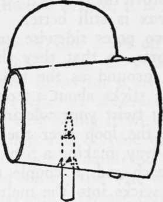

Tanning Skins. Other Animal Products. Part 5
Description
This section is from the book "Camping And Woodcraft", by Horace Kephart. Also available from Amazon: Camping and Woodcraft.
Tanning Skins. Other Animal Products. Part 5
Candle Lanterns
A very good lantern can be extemporized with a candle and a large tin can, or, better, a 5-lb. lard pail, the latter having the advantage that its flaring sides help to reflect the light. At a Doint a little beyond the middle of the can or pail make two cuts, crossing each other, through the tin, and bend the triangular points inward so as to grip the candle, when it is shoved up through the hole, and prevent it from slipping back. Then fix a wire bail on top. If a can is used, run the bail wire through a hole in the closed end, on through to the open end, and up into a loop for handle. If a pail, cut the candle hole directly in line with one of the bail ears, detach the bail from this ear, but leave it on the other, and run the free end around and hook it under flange of bottom (Fig 187). The candle is shoved up only a littlr inside the pail, at first, and shoved on farther as it burns down.
Fig. 187. Lard pail lantern.
Torches
If a dead pine tree can be found, chop off one of the old stubs of limbs, cutting deep into the trunk at the joint so as to get as much of the heavy resinous bulb as you can. Cut a few splinters on the big end of this pine knot, if need be, and light it.
A bark torch is made by peeling several strips of birch bark four or five inches wide, double or fold them several times if the strips are long, and place these bunches in the split end of a stick for handle. Or, take half-inch strips, two feet long or more, from the rough bark of a cedar, bind them together into a faggot with strings of the green inner bark, and set one end afire. It will not make much of a blaze, but will burn for several hours, giving at least enough light to read a compass by.
A good torch is made by winding cotton yarn or rags around a forked stick, in the form of a ball, and soaking in oil or melted tallow.
Southern Indians, when exploring caves, used joints of cane filled with deer's tallow and supplied with wicks.
Soap Making
Soap can be made wherever there is wood and grease. A rough-and-ready way is to boil wood ashes from the camp-fire in a little soft water (rainwater is best, hard water will not do) and allow them to settle, the clear liquid being decanted off; this can be done from day to day until the required quantity of weak lye has accumulated. Evaporate this by boiling until it is strong enough to float an egg. Then melt down any kind of animal fat (do not have the kettle more than half full), and while it is hot, add it to the boiling lye. Continue boiling and stirring until the mixture is of about the consistency of thick porridge; then pour it into any flat vessel and let it cool. The result is soft soap. To make* hard soap, you have merely to stir into the above as soon as it is poured out, some salt, in the proportion of two or three pints to five gallons of soap. A little powdered rosin added gradually to ihe melted tallow, before mixing with the lye, will make the soap firmer. Soap can be made without boiling, but it takes longer.
Lye-Running
Only the ashes of hardwoods are good for lye; those of resinous woods will not mix with the fat in boiling. The woods richest in potash are hickory, sugar maple, ash, beech and buckeye. The poisonous kernels of buckeye are soapy and can be used to cleanse fine fabrics. As lye is often useful to a backwoods tanner, and for other purposes, it may be worth while to put up an ash-hopper at a permanent camp. Take a section of hollow tree, or a barrel with both heads knocked out, or with auger holes bored in bottom. Stand it on a wide board that is elevated high enough for a bucket to stand below it. Cut a Y-shaped groove in the board part way around the bottom of the barrel and out to front of board. Tilt the board a little and fasten it so that the liquor from the barrel will follow the grooved channel to the front of the board and thus trickle into a pail set below it. Now put two or three layers of small round sticks in the bottom of the barrel, laying each course crosswise of the one below, cob-house fashion, and on top of this lay a couple of inches of straw or coarse grass; then put your ashes in the barrel, tamping them down firmly as they are shoveled in; make a funnel-shaped depression in the top and pour a bucket of rainwater into it. It will be from half a day to a day before the leach will run. Thereafter keep some water standing in the depression, adding only when the other water has disappeared. If the ashes have been firmly tamped, the leach will only trickle through, and that is what you want. The first run will be strong enough to cut grease; later runs should be put through twice. Such lye needs no boiling down.
Continue to:
- prev: Tanning Skins. Other Animal Products. Part 4
- Table of Contents
- next: Chapter XIX. Cave Exploration